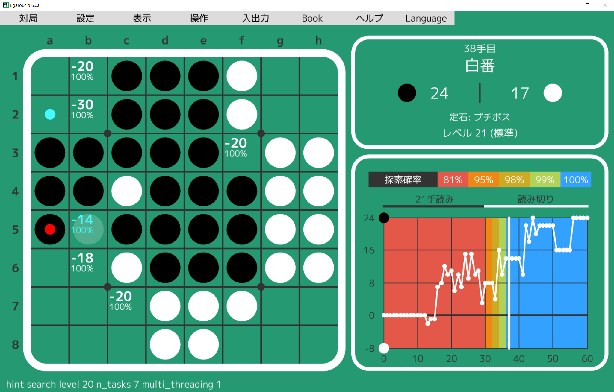

English
Egaroucid
世界最強のオセロAI (2021-)
Egaroucidはフルスクラッチで開発しているオセロAI、およびオセロAIを搭載したオセロ研究用ソフトウェアです。

オセロAI
Egaroucid 6 Lightは世界的なオセロAIコンテスト
CodinGame Othelloにて世界1位となりました(2022年8月15日現在)。
コンテスト版を
Webサイトで公開しています。
オセロ研究用ソフトウェア
コンテスト版よりも強化したオセロAI
Egaroucid 5を搭載したソフトウェアをフリーソフトとして公開しています。
このオセロAIはコンテスト版よりも高精度な評価関数を使い、CPUによる並列化も実現しました。主なアルゴリズムにはNegascout法を、並列化にはYBWCを用いています。
今後GPUによる大規模な並列化にも取り組む予定です。